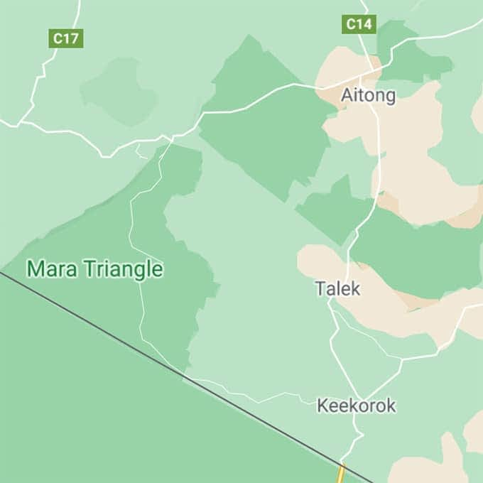
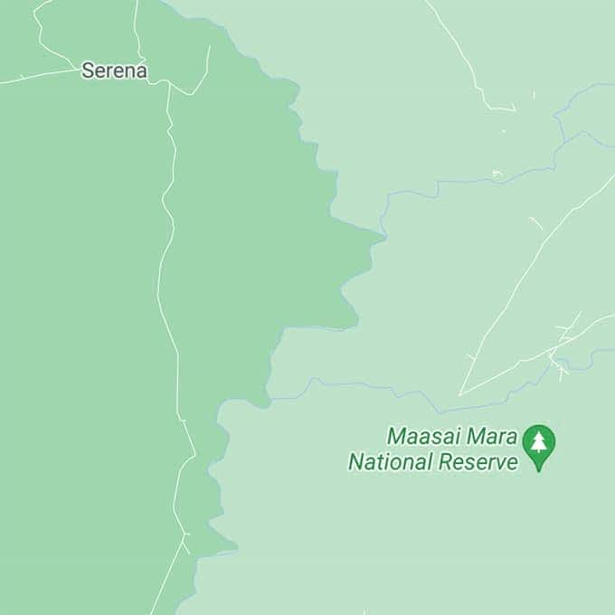
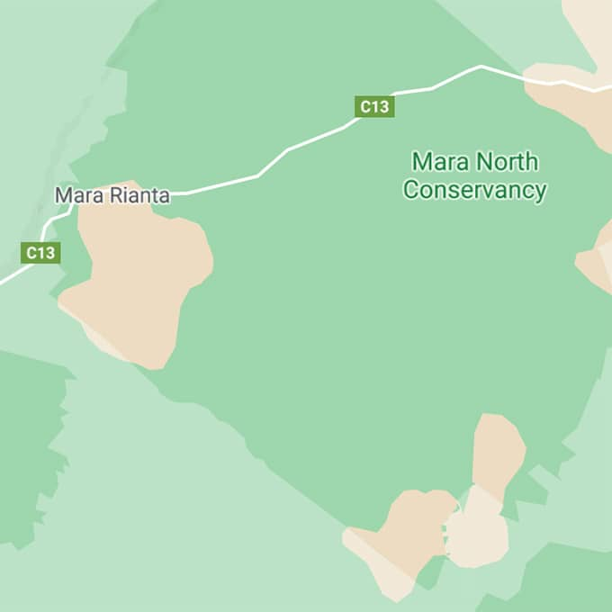

The Masai Mara in Kenya is nature's epic masterpiece.
A little bit about Masai Mara
Rolling hills, sprawling savannahs, dramatic river crossings and of course... more wildlife and adventure than any movie
could ever portray. Welcome to the Masai Mara, home to the lions of ‘Big Cat Diary’, temporary residence of the ‘Great
Migration’, mighty Maasai warriors and some of the most luxurious safari lodges on earth.
The Masai Mara features a stunning kaleidoscope of wild and rugged landscapes, warm and welcoming people and an exciting
array of creatures – big and small. World famous for hosting the epic Great Migration, the Masai Mara welcomes 1,5
million wildebeests onto its sprawling savannahs each July through October. The Masai Mara National Reserve and
conservancies are brimming with life and offer safari travellers a wide variety of activities to choose from. Whether
you take to the skies for a high-flying hot-air balloon adventure at sunrise or hit the road for a 4x4 safari, you’re
sure to leave the Masai Mara with unforgettable experiences and lifelong memories.
Going on a Masai Mara safari
Part of the fun of going on safari is planning your safari. We’ve been there... and know how it feels. As avid
travellers we can imagine you have loads of questions while planning your trip to the Masai Mara. Very few places on
earth are as unspoilt, adventurous and authentic as the Mara eco-system.
Reading up on the Masai Mara, finding out what you might encounter, exploring your accommodation options... we've done
most of the work for you and created this site to help you find all the answers to any questions you may have. To top it
off, we've brought together a top-notch collection of Masai Mara safari lodges and camps for you to choose from.
Naturally, we're only an e-mail or message away if you need a little extra help planning your safari.
About the Masai Mara
Known as one of the world’s most famous wildlife areas or ‘the world’s eight world wonder’, the
Masai Mara has endless
plains, breath-taking vistas and abundant wildlife. Learn more about the Masai Mara here.
Masai Mara special offers
Dreaming of the perfect safari holiday? We’ll help you find your way while planning your trip and
provide you with a
selection of the best available deals. Check out our latest Masai Mara special offers and discounts.
Getting to Masai Mara
Whether you’re arriving from far, far away or travelling to the Masai Mara from a destination
in
the region. We’ll guide you through your options for getting to the Mara and for getting around once you’re
here.
Masai Mara lodges & camps
The Masai Mara is rough and rugged, however you don't have to rough it during your stay.
Eco-chic
safari lodges with
four-poster beds, sundowners with your favourite G&T and infinity pools overlooking the African savanna
await.
We’ve selected a variety of warm and welcoming Masai Mara safari lodges and camps for you to choose from
during your
stay. Each of the accommodation options we’ve selected is known for offering premium safari activities,
first-class
accommodation and every creature comfort you could wish for during your stay..
We saw a leopard on a tree and we were lucky enough to watch four lionesses and three cubs eating a fresh hunt. In the
evening safari we were able to explore a massive variety of hippopotamus and a crocodile.
NAINA-DAMANI ON TRIPADVISOR
Masai Mara lodges & camps
The Masai Mara is rough and rugged, however you don't have to rough it during your stay. Eco-chic
safari lodges with
four-poster beds, sundowners with your favourite G&T and infinity pools overlooking the African savanna await.
We’ve selected a variety of warm and welcoming Masai Mara safari lodges and camps for you to choose from during your
stay. Each of the accommodation options we’ve selected is known for offering premium safari activities, first-class
accommodation and every creature comfort you could wish for during your stay..



Masai Mara lodges we love
We would like to share a few accommodation options with you for your stay in the Masai Mara. Our safari lodge options
come in a variety of price ranges, giving you plenty of possibilities to find the right Masai Mara safari camp for your
travel budget.
Keep in mind that the following are simply suggestions. We offer tailor-made safari experiences and look forward to
creating just the right mix of Masai Mara safari accommodation and activities based on your personal preferences. We
look forward to helping you create the bespoke Masai Mara safari of your dreams.
Masai Mara lodges we love
Kenyan hospitality meets Maasai-inspired luxury on the lush green banks of the Saparingo River. &Beyond Kichwa Tembo
Tented Camp lies on the edge of the Oloololo escarpment, where riverine forest meets the sweeping plains of the Masai
Mara.
Masai Mara lodges we love
Cottar’s 1920s Safari Camp offers guest vintage luxury at its very best. Cream-coloured tents decorated in 1920s epic
safari style, professional Maasai safari guides and above all a sense of elegance and class - this classic Kenyan safari
camp has it all.
Masai Mara lodges we love
Kenyan hospitality meets Maasai-inspired luxury on the lush green banks of the Saparingo River. &Beyond Kichwa Tembo
Tented Camp lies on the edge of the Oloololo escarpment, where riverine forest meets the sweeping plains of the
Masai
Mara.

.jpg)
.jpg)
.jpg)
.jpg)